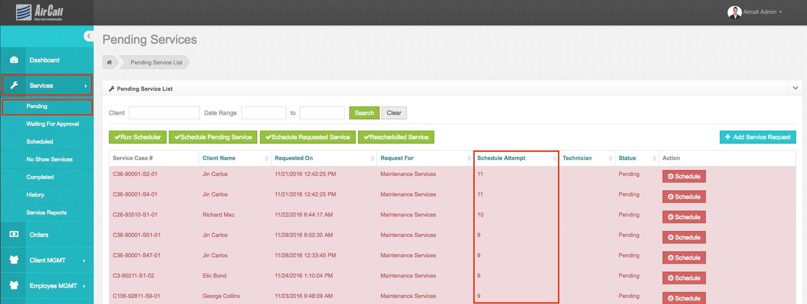
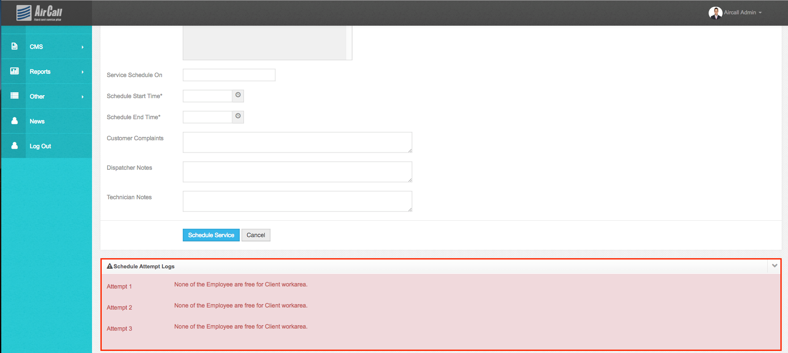
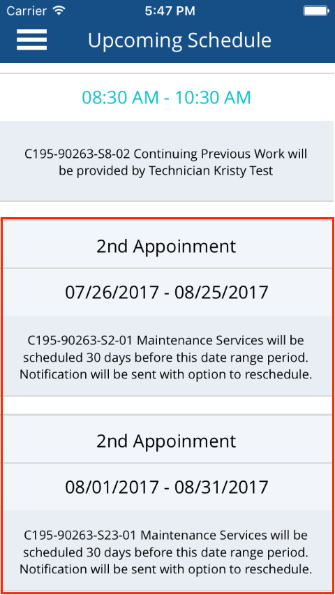
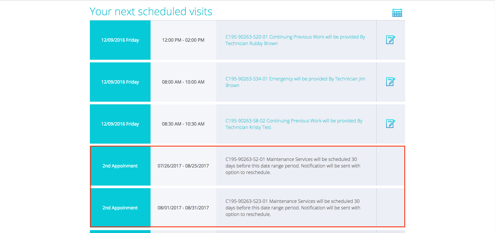
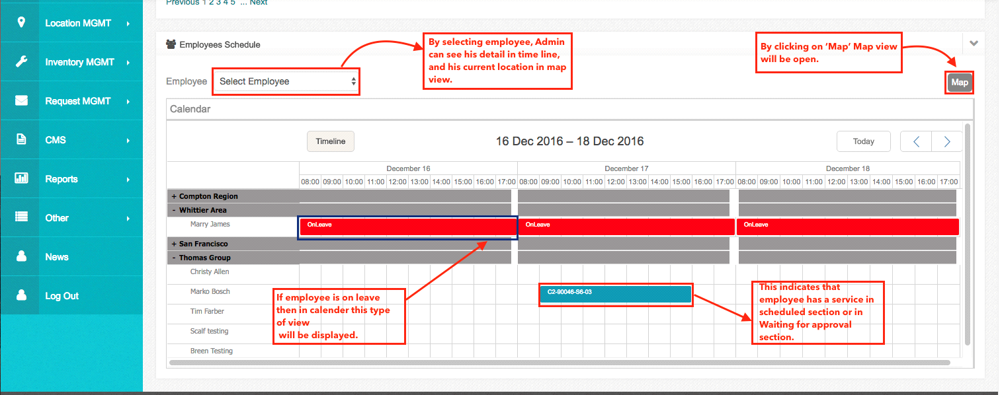
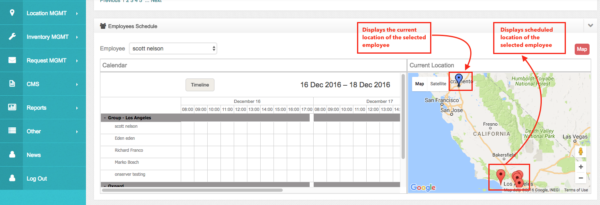

Pending
• In this section admin can see these type of services:
1. Newly added units’ X services except the first service(if scheduled automatically) will be displayed here.
2. Any services which are not assigned to the employee during the automatic rules i.e. employee has not assigned the work area, the employee is busy, part to do service not available etc.
3. Any service that is already scheduled but rescheduled by the client, employee or admin, will have the rescheduled status here.
4. Any service that is canceled by the client will have canceled status here.
5. Newly added requests of the service by the client, employee or admin.

• In this section admin can see the schedule attempt log which indicates that service is failed to assign due to some error. That error log will be shown in the detail of each service while clicking on the schedule button.
• Services in this section which have attempt log > 0 will be highlighted with red color in listing.

• Admin has to provide following information for adding a new request for clients:
Field |
Function |
Client Name (*): |
Name of client for whom admin wants to add extra services. From searchable list of client, admin has to select client and select address for which need to add request. Admin has to select the plans too. If any plan is inactivated by admin then that plan will not be show. Based on selection of client and address, all the units located at selected address and phone numbers of client will populate (Mobile, Home & Office). |
Service Unit (*) |
Can select multiple units, which needs to be serviced. |
Service Request Date (*): |
The date when the client has requested to add new service. |
Request For (*): |
Admin can request for below things:
|
Requested Time (*): |
Preferred time for new schedule. Select one of them:
This both times can be managed from Site Setting Section. |
Notes (*): |
Notes for the new service request. |
• Admin is able to assign an employee for unit service and schedule the service. Admin will provide the following details:
Field |
Function |
Work Area (*): |
Select work area from searchable group of work area. Employee work areas can be managed from Employee Management section. |
Technician (*): |
Technician for unit service. From selected work areas, all assigned employees are displayed. |
Service Scheduled On (*): |
Date for unit service schedule. |
Schedule Start Time (*): |
Start time of service. |
Schedule End Time (*): |
End time of service. |
Customer Complaints (*): |
Previous service notes will be displayed here. |
Dispatcher Notes: |
Notes of dispatcher. |
Technician Notes: |
Notes of technician. |
Daily Part List: |
Part (material) required for service. This is pre-populated and calculated from unit detail section. |
Service Report History: |
Admin can view all the past service reports for client unit. |
• The client can see unit’s pending services with expected start date and expected end date in upcoming schedule section as displayed in the below image using client application/ client portal.
• Here, System only shows the plan services which are in pending section. Client can not see the services which are requested or rescheduled and in a pending section.



• As you can see in the image, admin can also get information of employee using timeline view.
• In time line calendar, Information will be displayed work area vise. By default 3 days schedule will be displayed in time line.
• To get a detail of particular employee
1) Select employee from the dropdown
2) Timeline will display only that employee’s data
3) Click on ‘Map’ to see his current location. His current location will be sent via the employee application in every 3 minutes of time span.
• In map view, Current location of employee will be displayed as a blue marker on map and his scheduled location will be displayed as a red marker on map.
• To schedule a service directly from the timeline,
1) select a service from the pending section
2) now double click on the time line area on which you want to schedule the service.
3) A popup will displayed which contains time and employee name for that service.
4) Click on ‘Save’ ,Admin will be redirected to the schedule detail screen, on which he/she can see all the scheduled detail and from that page, by clicking on ‘Schedule’ service will be scheduled on a selected date.
5) By clicking on ‘Cancel’ Popup will be disappear.
• If employee is on leave then in time line, Admin can see a Red view with text ‘On Leave’ so Admin get idea which employee is on leave.
